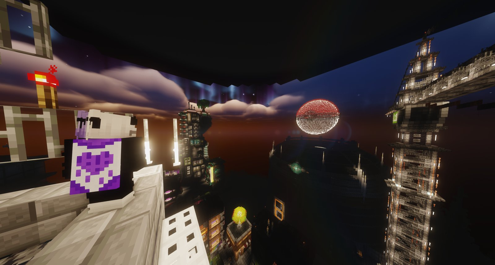
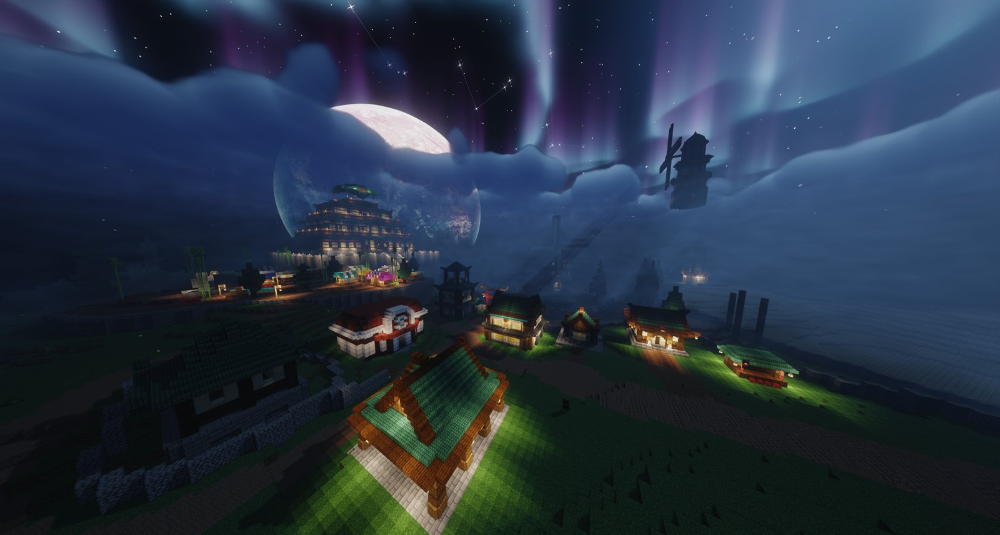

Photos


Gallery
Placeholder intro -- community screenshots, fanart, and event photos go here.
No photos synced yet -- once the server sync script (tools/sync_photos.py) runs, photos taken with Camerapture will show up here automatically.
No photos match that search.
Page 1 of 1
Category: